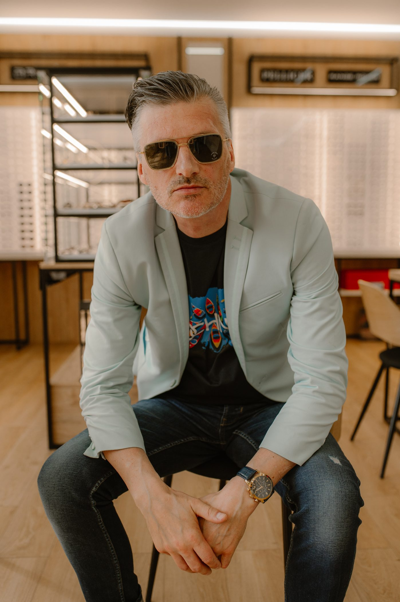
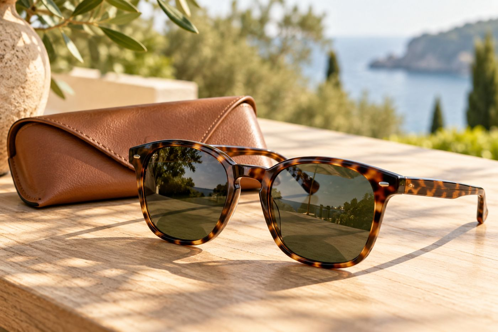
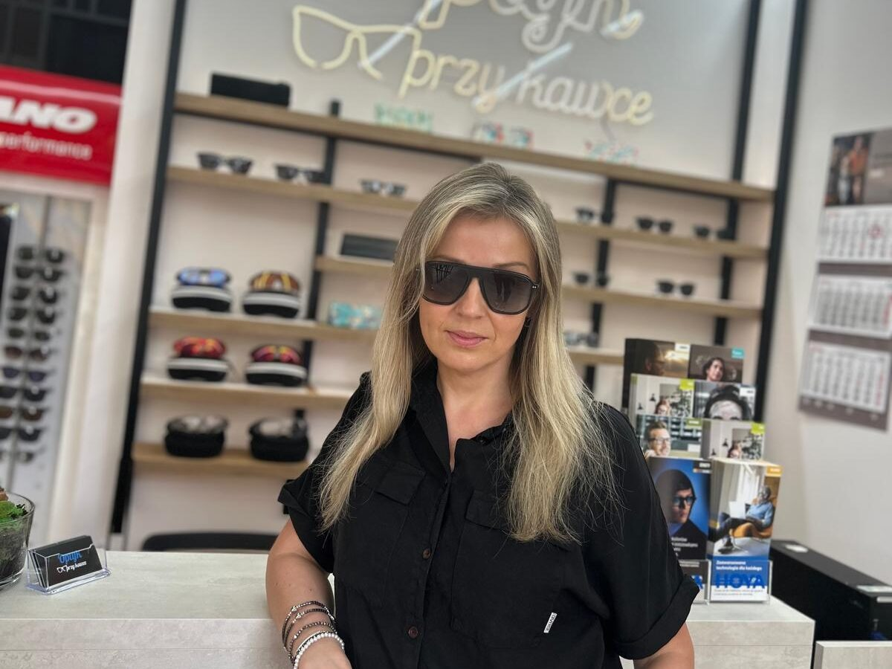
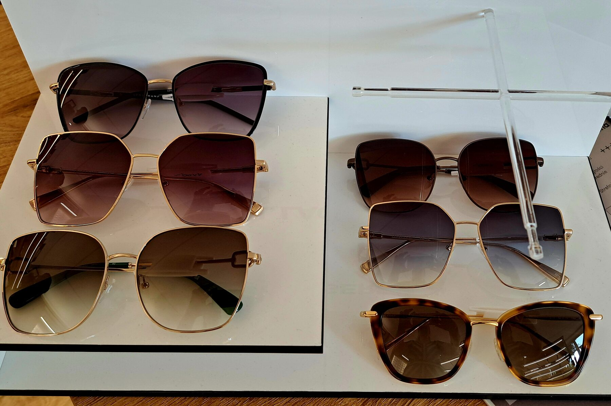

Na co dzień
Stylowy dodatek do codziennych spacerów, pracy i spotkań.
Poznaj możliwości →Okulary przeciwsłoneczne w Lublinie
Dobierz okulary przeciwsłoneczne do swojego wzroku, stylu i codziennych planów.

Stylowy dodatek do codziennych spacerów, pracy i spotkań.
Poznaj możliwości →Lepszy komfort widzenia na wodzie, drodze i w plenerze.
Poznaj możliwości →
Okulary przeciwsłoneczne dopasowane do Twojej recepty.
Poznaj możliwości →Ochrona zaczyna się od soczewek
Wybierając okulary, zwróć uwagę na ochronę UV, kategorię filtra i przeznaczenie soczewek.
Polaryzacja
Polaryzacja ogranicza część odblasków od jasnych powierzchni, na przykład wody i drogi.


Twoja korekcja także w słońcu
Zapytaj o okulary przeciwsłoneczne z korekcją dopasowaną do Twojej recepty.
Porozmawiajmy o możliwościachDobór i dopasowanie
Rozmawiamy o Twoim stylu życia, planach i codziennych aktywnościach.
Dobieramy odpowiednie oprawy i parametry soczewek.
Sprawdzamy komfort noszenia i dopasowanie do twarzy.
Zapytaj w salonie, jakie opcje są dostępne dla wybranych modeli.
Nie, słońce potrafi razić także jesienią i zimą, zwłaszcza za kierownicą.
Zapytaj o dostępny termin.
Poznaj także
Oprawki do Twojej twarzy, soczewki do Twojego dnia.
Dobór i podpowiedzi, jak ich używać.
Odwiedź nasz salon w Lublinie.